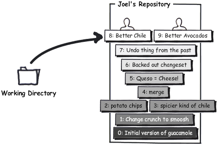
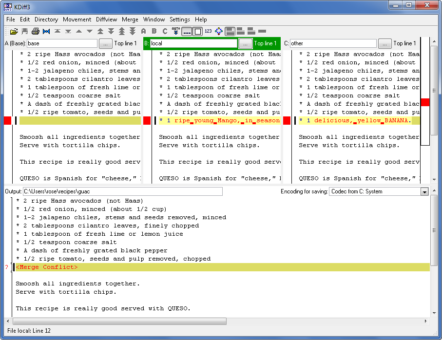
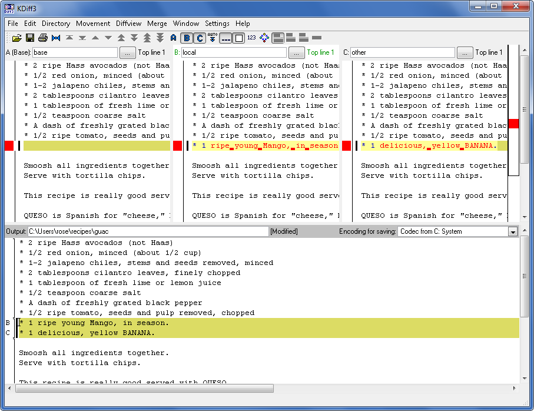

An important part of version control is coordinating the work of multiple people on the same code base.
Imagine that Rose and I both want to make a change to the guacamole recipe. Rose is improving the avocado quality. Before she starts, she’s going to pull all the latest changes from the central repository so that she’s totally up to date.
C:\Users\rose\recipes> hg pull pulling from http://joel.example.com:8000/ searching for changes adding changesets adding manifests adding file changes added 2 changesets with 2 changes to 1 files (run 'hg update' to get a working copy) C:\Users\rose\recipes> hg up 1 files updated, 0 files merged, 0 files removed, 0 files unresolved
Now an edit:
* 1/2 red onion, minced (about 1/2 cup)
* 1-2 habanero chiles, stems and seeds removed, minced
…


* 1/2 red onion, minced (about 1/2 cup)
* 1-2 habanero chiles, stems and seeds removed, minced
…
She commits and pushes the change off to the central repository:
C:\Users\rose\recipes> hg diff diff -r 549d45f24c37 guac --- a/guac Thu Feb 11 17:07:41 2010 -0500 +++ b/guac Thu Feb 11 17:10:40 2010 -0500 @@ -1,4 +1,4 @@ -* 2 ripe avocados +* 2 ripe Hass avocados (not Haas) * 1/2 red onion, minced (about 1/2 cup) * 1-2 habanero chiles, stems and seeds removed, minced * 2 tablespoons cilantro leaves, finely chopped C:\Users\rose\recipes> hg com -m "better avocados" C:\Users\rose\recipes> hg push pushing to http://joel.example.com:8000/ searching for changes adding changesets adding manifests adding file changes added 1 changesets with 1 changes to 1 files
Simultaneously, I make a change in a different part of the file:
* 1/2 red onion, minced (about 1/2 cup)
* 1-2 habanero chiles, stems and seeds removed, minced
…
* 1/2 red onion, minced (about 1/2 cup)
* 1-2 jalapeno chiles, stems and seeds removed, minced
…
I can commit, but I can’t push to the central repository.
C:\Users\joel\recipes> hg diff diff -r 549d45f24c37 guac --- a/guac Thu Feb 11 17:07:41 2010 -0500 +++ b/guac Thu Feb 11 17:12:09 2010 -0500 @@ -1,6 +1,6 @@ * 2 ripe avocados * 1/2 red onion, minced (about 1/2 cup) -* 1-2 habanero chiles, stems and seeds removed, minced +* 1-2 jalapeno chiles, stems and seeds removed, minced * 2 tablespoons cilantro leaves, finely chopped * 1 tablespoon of fresh lime or lemon juice * 1/2 teaspoon coarse salt C:\Users\joel\recipes> hg com -m "better chile" C:\Users\joel\recipes> hg push pushing to http://joel.example.com:8000/ searching for changes abort: push creates new remote heads! (did you forget to merge? use push -f to force)
This is probably the least useful error message in Mercurial. What it should say is:
C:\Users\joel\recipes> hg push pushing to http://joel.example.com:8000/ searching for changes ZOMG!!! There are changes in that repo that you don't have yet. Don't push now. Pull the latest changes and merge them first.
And indeed that is what I will do:
C:\Users\joel\recipes> hg pull pulling from http://joel.example.com:8000/ searching for changes adding changesets adding manifests adding file changes added 1 changesets with 1 changes to 1 files (+1 heads) (run 'hg heads' to see heads, 'hg merge' to merge)
Wondering what just arrived? The hg log -P . command is a handy way to find out.
C:\Users\joel\recipes> hg log -P . changeset: 9:44aefdeef9e0 tag: tip parent: 7:549d45f24c37 user: Rose Hillman <rose@example.com> date: Thu Feb 11 17:10:48 2010 -0500 summary: better avocados
Indeed, it’s Rose’s change from earlier. What’s going on with my repository right now?
C:\Users\joel\recipes> hg heads changeset: 9:44aefdeef9e0 tag: tip parent: 7:549d45f24c37 user: Rose Hillman <rose@example.com> date: Thu Feb 11 17:10:48 2010 -0500 summary: better avocados changeset: 8:bf5854ca20f7 user: Joel Spolsky <joel@joelonsoftware.com> date: Thu Feb 11 17:12:23 2010 -0500 summary: better chile C:\Users\joel\recipes> hg parent changeset: 8:bf5854ca20f7 user: Joel Spolsky <joel@joelonsoftware.com> date: Thu Feb 11 17:12:23 2010 -0500 summary: better chile
I have “multiple heads.” Essentially, my repository looks like this:
See the two heads? They came about because when Rose made her change, she was working off of changeset 7, and when I made my change, I was working off of changeset 7, too. So now a merge is needed. [Ed: Never use passive voice!] I need to merge.
C:\Users\joel\recipes> hg merge merging guac 0 files updated, 1 files merged, 0 files removed, 0 files unresolved (branch merge, don't forget to commit)
The merge command, hg merge, took the two heads and combined them. Then it left the result in my working directory. It did not commit it. That gives me a chance to check that the merge is correct:
C:\Users\joel\recipes> type guac * 2 ripe Hass avocados (not Haas) * 1/2 red onion, minced (about 1/2 cup) * 1-2 jalapeno chiles, stems and seeds removed, minced * 2 tablespoons cilantro leaves, finely chopped * 1 tablespoon of fresh lime or lemon juice * 1/2 teaspoon coarse salt * A dash of freshly grated black pepper * 1/2 ripe tomato, seeds and pulp removed, chopped Smoosh all ingredients together. Serve with tortilla chips. This recipe is really good served with QUESO. QUESO is Spanish for "cheese," but in Texas, it's just Kraft Slices melted in the microwave with some salsa from a jar. MMM!
That looks right; the avocados are Hass and the chiles are Jalapenos. So I’ll go ahead and commit and push that to the server.
C:\Users\joel\recipes> hg com -m "merge" C:\Users\joel\recipes> hg push pushing to http://joel.example.com:8000/ searching for changes adding changesets adding manifests adding file changes added 2 changesets with 2 changes to 1 files
I’m pushing two changesets: my original jalapeno change, and then the merge, which is its own changeset.
Notice that nothing about our two changes conflicted, since Rose and I were working on different parts of the recipe. So the merge was super duper easy. That’s the most common case, because in most organizations, each programmer is assigned to work on a different part of the code.
Sometimes you have a dysfunctional organization where nobody is willing to really put their foot down about who is supposed to work on what. This can cause sudden and often unexplained feelings of sadness among the programming staff. This is hard to detect. Symptoms can include: programmers locking themselves in bathrooms, programmers locking themselves in the server closet, high turnover, muted sobbing sounds in the cube farm, and sudden eardrum trauma caused by the sound of repeated firing of a military-class assault rifle.
BUT, even in the best-managed and healthiest organizations, merge conflicts do sometimes occur, and Mercurial will require the merging person to resolve the conflict. Let’s see what that looks like.
First… I want to bring Rose up to speed with my jalapeno changes:
C:\Users\rose\recipes> hg in comparing with http://joel.example.com:8000/ searching for changes changeset: 9:bf5854ca20f7 parent: 7:549d45f24c37 user: Joel Spolsky <joel@joelonsoftware.com> date: Thu Feb 11 17:12:23 2010 -0500 summary: better chile changeset: 10:8646f8cd7154 tag: tip parent: 9:bf5854ca20f7 parent: 8:44aefdeef9e0 user: Joel Spolsky <joel@joelonsoftware.com> date: Thu Feb 11 21:51:26 2010 -0500 summary: merge C:\Users\rose\recipes> hg pull pulling from http://joel.example.com:8000/ searching for changes adding changesets adding manifests adding file changes added 2 changesets with 2 changes to 1 files (run 'hg update' to get a working copy) C:\Users\rose\recipes> hg up 1 files updated, 0 files merged, 0 files removed, 0 files unresolved
Now we’re going to see what happens when you have a gen-yoo-ine conflict: we’re both going to muck with the ingredients a bit.
I added a banana:
* 1/2 red onion, minced (about 1/2 cup)
* 1-2 jalapeno chiles, stems and seeds removed, minced
* 2 tablespoons cilantro leaves, finely chopped
* 1 tablespoon of fresh lime or lemon juice
* 1/2 teaspoon coarse salt
* A dash of freshly grated black pepper
* 1/2 ripe tomato, seeds and pulp removed, chopped
Smoosh all ingredients together.
Serve with tortilla chips.
* 1/2 red onion, minced (about 1/2 cup)
* 1-2 jalapeno chiles, stems and seeds removed, minced
* 2 tablespoons cilantro leaves, finely chopped
* 1 tablespoon of fresh lime or lemon juice
* 1/2 teaspoon coarse salt
* A dash of freshly grated black pepper
* 1/2 ripe tomato, seeds and pulp removed, chopped
* 1 delicious, yellow BANANA.
Smoosh all ingredients together.
Serve with tortilla chips.
I checked in the banana change first:
C:\Users\joel\recipes> hg diff diff -r 8646f8cd7154 guac --- a/guac Thu Feb 11 21:51:26 2010 -0500 +++ b/guac Thu Feb 11 22:46:27 2010 -0500 @@ -6,6 +6,7 @@ * 1/2 teaspoon coarse salt * A dash of freshly grated black pepper * 1/2 ripe tomato, seeds and pulp removed, chopped +* 1 delicious, yellow BANANA. Smoosh all ingredients together. Serve with tortilla chips. C:\Users\joel\recipes> hg com -m "bananas YUM" C:\Users\joel\recipes> hg push pushing to http://joel.example.com:8000/ searching for changes adding changesets adding manifests adding file changes added 1 changesets with 1 changes to 1 files
And Rose, bless her heart, added a MANGO on the EXACT SAME LINE.
* 1/2 red onion, minced (about 1/2 cup)
* 1-2 jalapeno chiles, stems and seeds removed, minced
* 2 tablespoons cilantro leaves, finely chopped
* 1 tablespoon of fresh lime or lemon juice
* 1/2 teaspoon coarse salt
* A dash of freshly grated black pepper
* 1/2 ripe tomato, seeds and pulp removed, chopped
Smoosh all ingredients together.
Serve with tortilla chips.
* 1/2 red onion, minced (about 1/2 cup)
* 1-2 jalapeno chiles, stems and seeds removed, minced
* 2 tablespoons cilantro leaves, finely chopped
* 1 tablespoon of fresh lime or lemon juice
* 1/2 teaspoon coarse salt
* A dash of freshly grated black pepper
* 1/2 ripe tomato, seeds and pulp removed, chopped
* 1 ripe young Mango, in season.
Smoosh all ingredients together.
Serve with tortilla chips.
“Ripe young” mango, indeed.
C:\Users\rose\recipes> hg diff diff -r 8646f8cd7154 guac --- a/guac Thu Feb 11 21:51:26 2010 -0500 +++ b/guac Thu Feb 11 22:49:26 2010 -0500 @@ -6,6 +6,7 @@ * 1/2 teaspoon coarse salt * A dash of freshly grated black pepper * 1/2 ripe tomato, seeds and pulp removed, chopped +* 1 ripe young Mango, in season. Smoosh all ingredients together. Serve with tortilla chips. C:\Users\rose\recipes> hg com -m "mmmmango"
This time I got my change in first so Rose is going to have to merge. HA!
C:\Users\rose\recipes> hg pull pulling from http://joel.example.com:8000/ searching for changes adding changesets adding manifests adding file changes added 1 changesets with 1 changes to 1 files (+1 heads) (run 'hg heads' to see heads, 'hg merge' to merge) C:\Users\rose\recipes> hg merge
And suddenly, the conflict is detected, and up pops some kind of a graphical merge-conflict-resolution tool, with a user interface that only its mother could love, but they are usually quite good at what they do once you figure it out. A common merge conflict resolution tool these days is KDiff3, which shows Rose the following:
In KDiff3, you see four panes. The top left is the original file. Top center shows Rose her version. Top right shows Rose my version. The bottom pane is an editor where Rose constructs a merged file with the conflicts resolved.
Fixing conflicts is a relatively simple matter of going through each conflict and choosing how to resolve it. Rose goes crazy and decides that Banana Mango Guacamole couldn’t be that bad:
By the way, did I tell you that Rose seems to be dating? The other day she was seen leaving work with a guy that sort-of looked like Dennis Franz. She’s been in the best mood anyone has seen her in years.
Rose saves her changes and exits KDiff3.
merging guac 0 files updated, 1 files merged, 0 files removed, 0 files unresolved (branch merge, don't forget to commit) C:\Users\rose\recipes> hg diff diff -r f923c9049234 guac --- a/guac Thu Feb 11 22:49:31 2010 -0500 +++ b/guac Thu Feb 11 23:01:45 2010 -0500 @@ -7,6 +7,7 @@ * A dash of freshly grated black pepper * 1/2 ripe tomato, seeds and pulp removed, chopped * 1 ripe young Mango, in season. +* 1 delicious, yellow BANANA. Smoosh all ingredients together. Serve with tortilla chips. C:\Users\rose\recipes> hg com -m "merge" C:\Users\rose\recipes> hg push pushing to http://joel.example.com:8000/ searching for changes adding changesets adding manifests adding file changes added 2 changesets with 2 changes to 1 files
And the conflict is resolved.
One thing you should keep in mind: you do not have to merge on anybody’s schedule. You can hg pull whenever you want, and if you don’t feel like merging the conflicts, you’re free to keep working, and committing, happily, until you have time to think about the merge.
Test yourself
Here are the things you should know how to do after reading this tutorial:
- Work on a code base with other people
- Get their changes
- Push your changes
- Resolve merge conflicts that may come up from time to time
- Diagnose certain classes of programmer melancholy